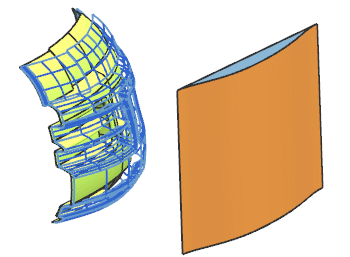
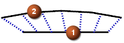
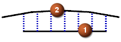
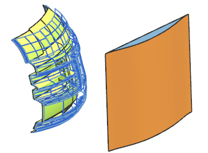
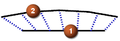
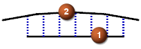

按曲面整体变形
这个类型允许您通过两种方法来控制面或曲面的形状：加冠以及拉长，在这个命令中，变形的大小是通过两个曲面来控制的—参考基准曲面以及控制曲面。

两种方法
-
拉长 — 测量两个曲面上相同参数位置间的距离(基本
 及控制
及控制  曲面之间)。
曲面之间)。
-
加冠 — 测量与基本曲面的法向距离(基本
及控制 曲面之间)。
这个类型允许您通过两种方法来控制面或曲面的形状：加冠以及拉长，在这个命令中，变形的大小是通过两个曲面来控制的—参考基准曲面以及控制曲面。

两种方法
拉长 — 测量两个曲面上相同参数位置间的距离(基本  及控制
及控制  曲面之间)。
曲面之间)。

加冠 — 测量与基本曲面的法向距离(基本  及控制
及控制  曲面之间)。
曲面之间)。
